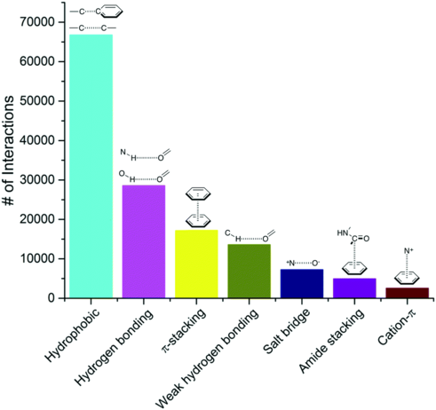
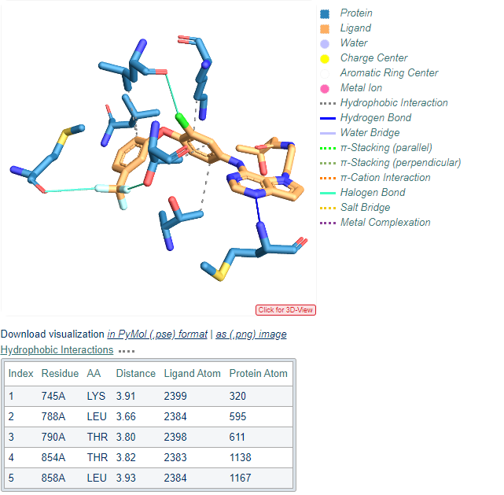
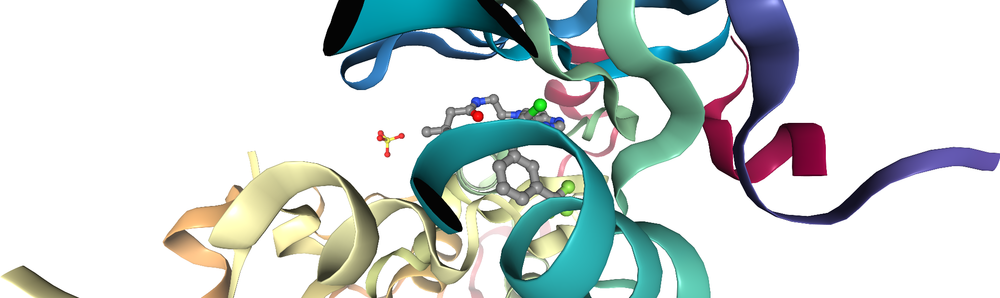
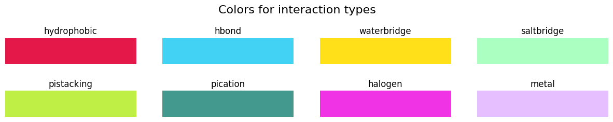
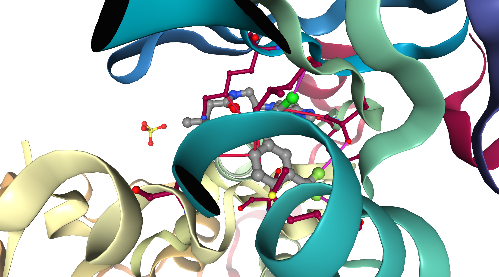

T016 · 蛋白质-配体相互作用¶
注： 本教程是 TeachOpenCADD 的一部分。TeachOpenCADD 是一个旨在教授领域专用技能，并提供可作为研究项目起点的流程模板的平台。
作者：
Dominique Sydow, 2018, Volkamer 实验室, Charité
Jaime Rodríguez-Guerra, 2020, Volkamer 实验室, Charité
Talia B. Kimber, 2021, Volkamer 实验室, Charité
Michele Wichmann, 2021, Volkamer 实验室, Charité
本教程的目标¶
在本教程中，我们重点研究蛋白质-配体相互作用。理解这些驱动分子识别的相互作用是药物设计的基础。
为此，我们将使用 PLIP（蛋白质-配体相互作用分析器）工具，该工具提供了一个命令行界面和一个 Python 库，用于检测和分析非共价相互作用。
理论 部分内容¶
蛋白质-配体相互作用
PLIP：蛋白质-配体相互作用分析器
网络服务
算法
可视化：复合物与相互作用
实践 部分内容¶
PDB 复合物：EGFR 示例
使用 PLIP 分析蛋白质-配体相互作用
相互作用类型表
使用 NGLView 可视化
相互作用分析
参考文献¶
蛋白质-配体相互作用综述（Int. J. Mol. Sci. (2016), 17, 144）
蛋白质数据库中非共价相互作用的系统分析（Nucl. Acids Res. (2014), 42, D1, D397-D399）
PLIP：蛋白质-配体相互作用分析器网络服务（Nucl. Acids Res. (2015), 43, W1, W443-W447）
PLIP 命令行工具：PLIP 现已在命令行上可用（Bioinformatics (2016), 32, 6, 932-934）
NGLView 用于可视化（Bioinformatics (2018), 34, 7, 1241-1242）
[1]:
import sys
if "google.colab" in sys.modules:
%pip install teachopencadd --no-deps -q
!teachopencadd -d 16
%pip uninstall teachopencadd -y -q
%pip install -qr requirements.txt
%conda install openbabel plip -c conda-forge -y
理论¶
蛋白质-配体相互作用¶
配体结合主要由配体与蛋白质口袋表面或蛋白质-蛋白质界面之间的非共价相互作用驱动。这个过程是分子识别的关键，也是药物设计中结合亲和力和选择性的主要决定因素。
非共价相互作用包括氢键、疏水相互作用（包括 π-π 堆叠）、卤键、离子相互作用、金属配位以及范德华力。
这些相互作用可以通过多种方式进行合理化分析，这为系统分析对接结果打开了大门。

图 1：非共价相互作用的频率。 从共晶复合物中提取的 750,873 个配体-蛋白质原子对中统计得出，数据来源为 PDBbind 数据库（Nucl. Acids Res. (2014), 42, D1, D397-D399）。
有几种程序可以自动化分析蛋白质-配体相互作用。
例如，激酶-配体相互作用指纹和结构数据库（KLIFS）是专门为激酶设计的数据集。相比之下，PLIP 适用于任何蛋白质-配体复合物。本教程重点介绍 PLIP。
有关激酶特定相互作用的更多信息，请参阅 教程 T026。
PLIP：蛋白质-配体相互作用分析器¶
对于更广泛的蛋白质集合，PLIP 也因其公开可用的网络服务器和免费使用的 Python 库而广受欢迎。
PLIP：网络服务¶
PLIP 网络服务是一个免费可用的工具，可以从任何 PDB 结构中展示蛋白质-配体相互作用，如下面的图 2 所示。

图 2：由 PLIP 网络服务生成的蛋白质-配体相互作用的可视化。 该示例显示了一个 EGFR 激酶复合物，配体为 ZINC6471838（绿色），疏水接触以灰白色虚线表示，氢键以实线蓝色表示，π-堆叠以绿色虚线表示。图片改编自 PLIP 网络服务。
PLIP：算法¶
对于每个结合位点，PLIP 算法仅在蛋白质和配体原子处于特定距离阈值内时才考虑它们。一旦确定了蛋白质和配体原子对，就会检查它们是否满足电子和几何标准，这取决于相互作用的类型。图 3 给出了 PLIP 算法的概念性概述。

图 3：PLIP 算法流程。
随论文（Nucl. Acids Res. (2015), 43, W1, W443-W447）附带的支持信息包含了 PLIP 算法更详细的描述。
[4]:
from IPython.display import display, HTML
pdf_url = "https://www.ncbi.nlm.nih.gov/pmc/articles/PMC4489249/bin/supp_gkv315_nar-00254-web-b-2015-File003.pdf"
# Construct the URL for the Google Docs Viewer service
viewer_url = f"https://docs.google.com/viewer?url={pdf_url}&embedded=true"
# Display the PDF using the HTML <iframe> tag
display(
HTML(
f'<iframe src="{viewer_url}" width="900" height="600" frameborder="0" allowfullscreen></iframe>'
)
)
/opt/miniconda3/envs/T016_3100/lib/python3.10/site-packages/IPython/core/display.py:475: UserWarning: Consider using IPython.display.IFrame instead
warnings.warn("Consider using IPython.display.IFrame instead")
可视化：复合物与相互作用¶
我们将使用 nglview 进行可视化。它是一个基于网络的分子查看器，可以在 Jupyter notebook 上运行。关于 nglview 的更高级使用，请参阅 教程 T017。
实践¶
[5]:
# 导入库
from pathlib import Path
import time
import warnings
warnings.filterwarnings("ignore")
import pandas as pd
import nglview as nv
from pypdb.clients.pdb.pdb_client import get_pdb_file
# import openbabel
import numpy as np
import matplotlib.pyplot as plt
from matplotlib import colors
from plip.structure.preparation import PDBComplex
from plip.exchange.report import BindingSiteReport
from opencadd.structure.core import Structure
2025-12-22 13:54:22,369 [WARNING] [TRJ.py:151] MDAnalysis.coordinates.AMBER: netCDF4 is not available. Writing AMBER ncdf files will be slow.
[6]:
def get_structure(pdb_id):
# 下载 PDB 文件内容。
pdb_file_content = get_pdb_file(pdb_id)
# 从内容创建 nglview 结构对象
structure = nv.TextStructure(pdb_file_content, ext="pdb")
return structure
def get_pdb_nglviewer(pdb_id, default_representation=True, gui=False):
structure = get_structure(pdb_id)
# set structure viewer
nglviewer = nv.show_file(structure, default_representation=default_representation, gui=gui)
return nglviewer
[7]:
# 绝对路径
HERE = Path(_dh[-1])
DATA = HERE / "data"
PDB 复合物：EGFR 示例¶
作为本笔记本的测试用例，我们选择 EGFR 激酶。考虑的 PDB 结构由 ID 3POZ 给出。让我们使用 nglview 可视化该结构。
[8]:
pdb_id = "3poz"
我们现在使用 opencadd.structure.superposition 从 PDB 获取 PDB 结构文件。更多细节见 教程 T008 关于蛋白质数据获取的内容。
[9]:
pdb_file = Structure.from_pdbid(pdb_id)
# 下载到文件以便后续使用
pdb_file.write(DATA / f"{pdb_id}.pdb")
基于 PDB ID 显示复合物
[10]:
ngl_viewer = get_pdb_nglviewer(pdb_id)
# add the ligands
ngl_viewer.add_representation(repr_type="ball+stick", selection="hetero and not water")
# center view on binding site
ngl_viewer.center("ligand")
ngl_viewer
Sending GET request to https://files.rcsb.org/download/3poz.pdb to fetch 3poz's pdb file as a string.
[11]:
# render a static image
ngl_viewer.render_image(trim=True, factor=2);
[29]:
ngl_viewer._display_image()
[29]:

使用 PLIP 分析蛋白质-配体相互作用¶
PLIP 提供了一个网络服务器用于自动化分析，但很遗憾没有提供 API。我们可以尝试像使用标准用户一样使用 HTML 表单，但这将构成网页抓取，并不稳定。不过，PLIP 也作为一个 Python 库提供，可以通过 conda 安装（包含在 teachopencadd 环境中）。
我们将使用 PLIP（蛋白质-配体相互作用分析器）的 Python 实现。
PLIP 接受 PDB 文件作为输入，因此我们可以将 PDB 文件传递给 PLIP，让它发挥它的魔力。BindingSiteReport 类处理 PDBComplex 中每个被检测到的结合位点，并创建一个包含相互作用信息的对象。让我们创建一个辅助函数来为我们处理这一点。
[13]:
def retrieve_plip_interactions(pdb_file):
"""
从 PLIP 获取相互作用信息。
Parameters
----------
pdb_file :
复合物的 PDB 文件。
Returns
-------
dict :
包含结合位点和相互作用的字典。
"""
protlig = PDBComplex()
protlig.load_pdb(pdb_file) # load the pdb file
for ligand in protlig.ligands:
protlig.characterize_complex(ligand) # find ligands and analyze interactions
sites = {}
# loop over binding sites
for key, site in sorted(protlig.interaction_sets.items()):
binding_site = BindingSiteReport(site) # collect data about interactions
# tuples of *_features and *_info will be converted to pandas DataFrame
keys = (
"hydrophobic",
"hbond",
"waterbridge",
"saltbridge",
"pistacking",
"pication",
"halogen",
"metal",
)
# interactions is a dictionary which contains relevant information for each
# of the possible interactions: hydrophobic, hbond, etc. in the considered
# binding site. Each interaction contains a list with
# 1. the features of that interaction, e.g. for hydrophobic:
# ('RESNR', 'RESTYPE', ..., 'LIGCOO', 'PROTCOO')
# 2. information for each of these features, e.g. for hydrophobic
# (residue nb, residue type,..., ligand atom 3D coord., protein atom 3D coord.)
interactions = {
k: [getattr(binding_site, k + "_features")] + getattr(binding_site, k + "_info")
for k in keys
}
sites[key] = interactions
return sites
我们为感兴趣的复合物创建字典：
[14]:
interactions_by_site = retrieve_plip_interactions(f"{DATA}/{pdb_id}.pdb")
看看检测到了多少个结合位点：
[15]:
print(
f"Number of binding sites detected in {pdb_id} : "
f"{len(interactions_by_site)}\n"
f"with {interactions_by_site.keys()}"
)
# NBVAL_CHECK_OUTPUT
Number of binding sites detected in 3poz : 4
with dict_keys(['03P:A:1023', 'SO4:A:1', 'SO4:A:2', 'SO4:A:3'])
在这种情况下，包含配体 03P 的第一个结合位点将被进一步研究。
[16]:
index_of_selected_site = 0
selected_site = list(interactions_by_site.keys())[index_of_selected_site]
print(selected_site)
03P:A:1023
相互作用类型表¶
我们可以为特定的结合位点和相互作用类型构建一个 pandas.DataFrame。
[17]:
def create_df_from_binding_site(selected_site_interactions, interaction_type="hbond"):
"""
从结合位点和相互作用类型创建数据框。
Parameters
----------
selected_site_interactions : dict
所选位点已预计算的 PLIP 相互作用信息
interaction_type : str
The interaction type of interest (default set to hydrogen bond).
Returns
-------
pd.DataFrame :
DataFrame with information retrieved from PLIP.
"""
# check if interaction type is valid:
valid_types = [
"hydrophobic",
"hbond",
"waterbridge",
"saltbridge",
"pistacking",
"pication",
"halogen",
"metal",
]
if interaction_type not in valid_types:
print("!!! Wrong interaction type specified. Hbond is chosen by default!!!\n")
interaction_type = "hbond"
df = pd.DataFrame.from_records(
# data is stored AFTER the column names
selected_site_interactions[interaction_type][1:],
# column names are always the first element
columns=selected_site_interactions[interaction_type][0],
)
return df
疏水相互作用
在下一个单元格中，我们显示了所选结合位点的疏水相互作用。
[18]:
create_df_from_binding_site(interactions_by_site[selected_site], interaction_type="hydrophobic")
[18]:
| RESNR | RESTYPE | RESCHAIN | RESNR_LIG | RESTYPE_LIG | RESCHAIN_LIG | DIST | LIGCARBONIDX | PROTCARBONIDX | LIGCOO | PROTCOO | |
|---|---|---|---|---|---|---|---|---|---|---|---|
| 0 | 745 | LYS | A | 1023 | 03P | A | 3.91 | 2398 | 320 | (18.317, 32.25, 10.052) | (20.469, 34.989, 8.267) |
| 1 | 788 | LEU | A | 1023 | 03P | A | 3.66 | 2383 | 595 | (18.404, 30.743, 6.486) | (18.317, 33.573, 4.169) |
| 2 | 790 | THR | A | 1023 | 03P | A | 3.80 | 2397 | 611 | (16.476, 34.203, 10.862) | (12.875, 33.449, 9.914) |
| 3 | 854 | THR | A | 1023 | 03P | A | 3.82 | 2382 | 1138 | (18.135, 32.543, 11.422) | (17.798, 28.992, 12.797) |
| 4 | 858 | LEU | A | 1023 | 03P | A | 3.93 | 2383 | 1167 | (18.404, 30.743, 6.486) | (22.084, 30.736, 5.093) |
如你所见，该表与 notebook 理论 部分中的图一致。
氢键相互作用
如果对氢键相互作用感兴趣，可以按以下方式生成表格：
[19]:
create_df_from_binding_site(interactions_by_site[selected_site], interaction_type="hbond")
[19]:
| RESNR | RESTYPE | RESCHAIN | RESNR_LIG | RESTYPE_LIG | RESCHAIN_LIG | SIDECHAIN | DIST_H-A | DIST_D-A | DON_ANGLE | PROTISDON | DONORIDX | DONORTYPE | ACCEPTORIDX | ACCEPTORTYPE | LIGCOO | PROTCOO | |
|---|---|---|---|---|---|---|---|---|---|---|---|---|---|---|---|---|---|
| 0 | 793 | MET | A | 1023 | 03P | A | False | 2.01 | 2.96 | 163.57 | True | 629 | Nam | 2404 | Nar | (13.371, 34.064, 15.005) | (10.667, 33.654, 16.145) |
卤键相互作用
让我们也来看看卤键相互作用：
[20]:
create_df_from_binding_site(interactions_by_site[selected_site], interaction_type="halogen")
[20]:
| RESNR | RESTYPE | RESCHAIN | RESNR_LIG | RESTYPE_LIG | RESCHAIN_LIG | SIDECHAIN | DIST | DON_ANGLE | ACC_ANGLE | DON_IDX | DONORTYPE | ACC_IDX | ACCEPTORTYPE | LIGCOO | PROTCOO | |
|---|---|---|---|---|---|---|---|---|---|---|---|---|---|---|---|---|
| 0 | 766 | MET | A | 1023 | 03P | A | False | 3.60 | 167.05 | 118.86 | 2389 | F | 431 | O2 | (14.283, 28.118, 6.395) | (12.164, 26.835, 3.777) |
| 1 | 788 | LEU | A | 1023 | 03P | A | False | 3.23 | 159.67 | 108.02 | 2396 | Cl | 592 | O2 | (15.676, 34.766, 8.319) | (14.792, 37.053, 6.216) |
| 2 | 790 | THR | A | 1023 | 03P | A | True | 3.47 | 171.27 | 103.84 | 2388 | F | 610 | O3 | (13.867, 29.356, 8.056) | (11.467, 31.629, 9.124) |
使用 NGLView 可视化¶
现在，让我们尝试在 NGL 查看器中表示这些相互作用。我们可以在相互作用点（pandas.DataFrame 中的 LIGCOO 和 PROTCOO）之间绘制圆柱体，并根据图 4 所示进行颜色编码。颜色取自 matplotlib 颜色图。

图 4：用于不同相互作用类型的颜色映射。
[21]:
color_map = {
"hydrophobic": [0.90, 0.10, 0.29],
"hbond": [0.26, 0.83, 0.96],
"waterbridge": [1.00, 0.88, 0.10],
"saltbridge": [0.67, 1.00, 0.76],
"pistacking": [0.75, 0.94, 0.27],
"pication": [0.27, 0.60, 0.56],
"halogen": [0.94, 0.20, 0.90],
"metal": [0.90, 0.75, 1.00],
}
让我们看看这些 RGB 颜色对应什么：
[27]:
fig, axs = plt.subplots(nrows=2, ncols=4, figsize=(15, 2))
plt.subplots_adjust(hspace=1)
fig.suptitle("Colors for interaction types", size=16, y=1.2)
for ax, (interaction, color) in zip(fig.axes, color_map.items()):
ax.imshow(np.zeros((1, 5)), cmap=colors.ListedColormap(color_map[interaction]))
ax.set_title(interaction, loc="center")
ax.set_axis_off()
plt.show()

定义一个辅助函数来显示相互作用。
[23]:
def show_interactions_3d(
pdb_id, selected_site_interactions, highlight_interaction_colors=color_map
):
"""
蛋白质-配体相互作用的 3D 可视化。
Parameters
----------
pdb_id : str
感兴趣的 PDB ID。
selected_site_interactions : dict
Precaluclated interactions from PLIP for the selected site
highlight_interaction_colors : dict
The colors used to highlight the different interaction types.
Returns
-------
NGL viewer with explicit interactions given by PLIP.
"""
# Create NGLviewer
viewer = nv.NGLWidget(height="600px", default=True, gui=True)
# Add protein
prot_component = viewer.add_pdbid(pdb_id)
# Add the ligands
viewer.add_representation(repr_type="ball+stick", selection="hetero and not water")
interacting_residues = []
for interaction_type, interaction_list in selected_site_interactions.items():
color = highlight_interaction_colors[interaction_type]
if len(interaction_list) == 1:
continue
df_interactions = pd.DataFrame.from_records(
interaction_list[1:], columns=interaction_list[0]
)
for _, interaction in df_interactions.iterrows():
name = interaction_type
# add cylinder between ligand and protein coordinate
viewer.shape.add_cylinder(
interaction["LIGCOO"],
interaction["PROTCOO"],
color,
[0.1],
name,
)
interacting_residues.append(interaction["RESNR"])
# Display interacting residues
res_sele = " or ".join([f"({r} and not _H)" for r in interacting_residues])
res_sele_nc = " or ".join([f"({r} and ((_O) or (_N) or (_S)))" for r in interacting_residues])
prot_component.add_ball_and_stick(sele=res_sele, colorScheme="chainindex", aspectRatio=1.5)
prot_component.add_ball_and_stick(sele=res_sele_nc, colorScheme="element", aspectRatio=1.5)
# Center on ligand
viewer.center("ligand")
return viewer
[24]:
viewer_3d = show_interactions_3d(pdb_id, interactions_by_site[selected_site])
viewer_3d
[25]:
viewer_3d.render_image(trim=True, factor=2, transparent=True);
[28]:
viewer_3d._display_image()
[28]:

相互作用分析¶
正如我们在 NGL 查看器中看到的，PLIP 成功识别了结合位点中蛋白质和配体之间的不同相互作用，以我们的激酶示例（3poz）为例：
典型的铰链区氢键双联体（MET793 的骨架 NH 和 CO）。
配体邻近残基的额外疏水接触。
MET793 骨架与 CYS797 骨架之间的额外氢键相互作用。
讨论¶
在本教程中，我们学习了蛋白质-配体相互作用，具体来说是使用蛋白质-配体相互作用分析器（简称 PLIP）。我们为 PDB 复合物创建了一个包含相互作用信息的 DataFrame。此外，我们还看到了如何使用 NGL 查看器可视化相互作用，以进行视觉分析。
该工作流可以很容易地应用于其他 PDB 复合物，并且可以在教程中介绍的相互作用类型之外进行扩展。
测验¶
某些相互作用是否看起来比其他相互作用更重要？
疏水相互作用和氢键之间有什么区别？它们有什么相似之处？
考虑 PLIP 库的附加功能（另请参阅 PLIP 网络服务），分析蛋白质-配体相互作用的显著优势是什么？